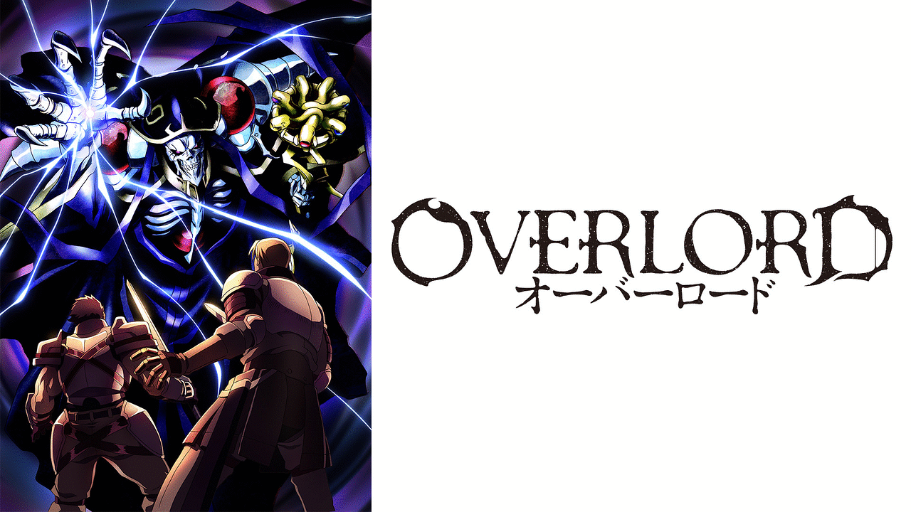
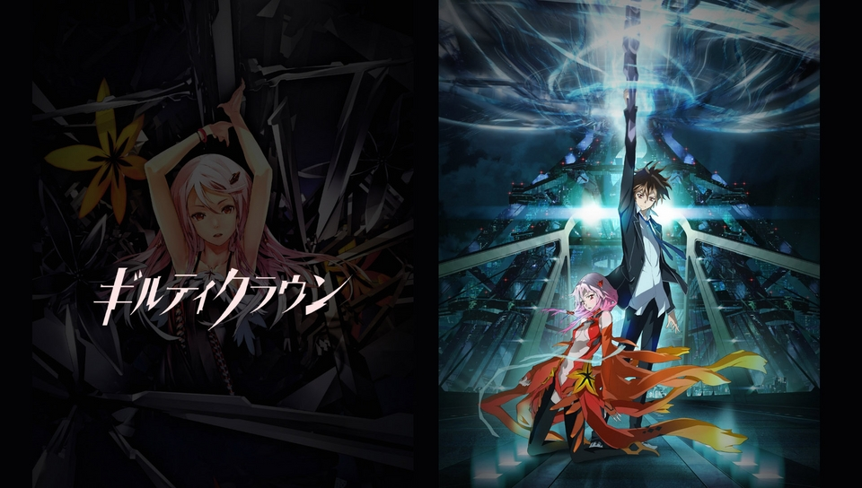

SFファンタジー
『ソードアート・オンライン』（Sword Art Online）

あらすじ
これは、ゲームであっても遊びではない。 2022年。人類はついに完全なる仮想空間を実現した。VRMMORPG(仮想大規模オンラインロールプレイングゲーム)「ソードアート・オンライン」のプレイヤーの一人であるキリト。SAOの世界を満喫していた彼は、ログインした他の1万人のプレイヤーと共にゲームマスターから恐るべき託宣を聞かされる。それは、ゲームをクリアすることだけが、この世界から脱出する唯一の方法であること。そして、このゲーム内でゲームオーバーは現実世界での“死”を意味するということだった……。
© 川原 礫/アスキー・メディアワークス/SAO Project
キャスト
キリト：松岡禎丞 シリカ ：日高里菜
アスナ：戸松遥 リーファ ：竹達彩奈
ユイ ：伊藤かな恵 リズベット：高垣彩陽
感想
誰もが知ってる王道アニメSAO【ソードアートオンライン）の原作
ラノベからアニメ化されて大ヒットした王道アニメ
この作品に最初に出会ったのは中学校の時ラノベででした。
当時世界観が斬新で一気に引き込まれていったのを覚えています。
壮大な世界観と子供の心をつかむようなシナリオが凄く魅力的で、
ストーリーが進むにつれ段々と感情移入してしまうようにできていて、
バトル系だけではなくてアスナ（ヒロイン）との胸が酸っぱくなるような恋愛系の要素が
単調なバトルシーンだけのアニメではなくて一つの世界観として引き込まれる現象を作ったのかなと思っています。
アニメをあまり見たことない人や単調なバトル系だけじゃつまらないと感じる人に是非お勧めしたい一作です。
オーバーロード

あらすじ
時は2138年。一大ブームを巻き起こした仮想現実体感型オンラインゲーム《ユグドラシル》はサービス終了を迎えようとしていた。 プレイヤーであるモモンガも仲間と栄華を誇ったギルドで一人静かにその時を待っていた。 しかし、終了時間を過ぎてもログアウトしないゲーム。突如として意思を持ち始めたNPCたち。 ギルドの外には見たこともない異世界が広がっていた。 現実世界ではゲーム好きの孤独で冴えない青年が、骸骨の姿をした最強の大魔法使いとなる！ 世界を掌中におさめる死の支配者、ここに光臨！！
© 丸山くがね・KADOKAWA刊／オーバーロード製作委員会
キャスト
モモンガ（アインズ）：日野聡 / アルベド：原由実 / シャルティア・ブラッドフォールン：上坂すみれ / アウラ・ベラ・フィオーラ：加藤英美里 / マーレ・ベロ・フィオーレ：内山夕実 / デミウルゴス：加藤将之 / コキュートス：三宅健太 / セバス・チャン：千葉繁 / ナーベラル・ガンマ：沼倉愛美 / ユリ・アルファ：五十嵐 / ガゼフ：白熊寛嗣 / ニグン：子安武人 / エンリ：M・A・O / ハムスケ：渡辺明乃 / ンフィーレア：村瀬歩 / リイジー：谷育子 / ブリタ：ゆきのさつき / クレマンティーヌ：悠木碧 / カジット：稲葉実 / ペテル：興津和幸 / ルクルット：花江夏樹 / ニニャ：田村陸心 / ダイン：竹内良太 ほか
感想
最強の大魔法使い・モモンガの伝説
いわゆる主人公最強系のアニメではあるのですが他の同じ系統のアニメとは違い、周りに支えられながら最強を維持している感じがあって新鮮でした。
仲間との信頼関係、主人公の誰も寄せ付けない強さ、見ていて圧倒される頭脳戦、その全てを楽しむことができる作品です。
アニメ化が今でも続いている人気作品ですのでおすすめです。
ギルティクラウン

あらすじ
2029年、突如発生した“アポカリプスウィルス”の蔓延によって、大混乱に陥った日本。 無政府状態となったこの国は、超国家間で組織された“GHQ”の武力介入を受け、その統治下に置かれることとなる。 のちに「ロスト・クリスマス」と呼ばれるこの事件をきっかけに、日本は独立国家としての体を失い、形だけの自治権を与えられ、人々はかりそめの平和を享受していた。 そして時は流れ、10年後の2039年。鬱屈した気持ちを抱えながら、どこか世間に冷めた視線を送る少年の名は、桜満集。 天王州第一高校に通う高校2年生の彼は、クラスメイトたちとも一定の距離を保ち、ただ漫然と、平穏な日々を送っていた。 しかし集の平穏な日常はある日、突然、打ち破られる。放課後、お気に入りの場所で出会った、ひとりの少女。彼女の名は、楪 いのりといった。 集が憧れ、ウェブ上で絶大な影響力を誇る人気の歌姫。 そして彼女には、もうひとつの裏の顔があった。 ”ＧＨＱ”からの「日本の解放」を謳い、命を賭けて孤独な戦いを続けるレジスタンス組織”葬儀社”。 いのりは、17歳の若き首領恙神涯に率いられたこの組織のメンバーでもあったのだ。 いのりや涯たちに導かれ、“葬儀社”の活動に関わり始める集。そして、彼の右手に現れる“王の刻印”。 その“印”により集は、人の身体から「ヴォイド」と呼ばれる物質を自在に引き出し、それを武器に闘う力を得る。 しかしそれはまた、彼が背負った“罪の王冠”の物語の始まりでもあった……。
© GUILTY CROWN COMMITTEE
キャスト
桜満集：梶裕貴/ 恙神涯：中村悠一/ 楪いのり：茅野愛衣/ 篠宮綾瀬：花澤香菜/ ツグミ：竹達彩奈/ 校條祭：嶋村侑/ 魂館颯太：阪口大助/ 寒川谷尋：水島大宙/ 草間花音：寿美菜子/ 供奉院亜里沙：遠藤綾/ 四分儀：子安武人/ アルゴ：勝杏里/ 大雲：高口公介/ ダリル・ヤン：内山昂輝 ほか
感想
一人の少年が背負った”罪の王冠”の物語
この作品は話の内容が難しくその上ガラッと展開が変わる部分があるので詰め込みすぎてよく分からないという意見も耳にしますが、
個人的に疾走感があって面白く内容も細かいところまでこだわってると感じたので見応えのある作品だと思います。
また本作から生まれたEGOISTが有名であり、”アニメは観てないけど曲は知っている”という人もいるのではないでしょうか。
是非一度みていただきたい作品の一つです。